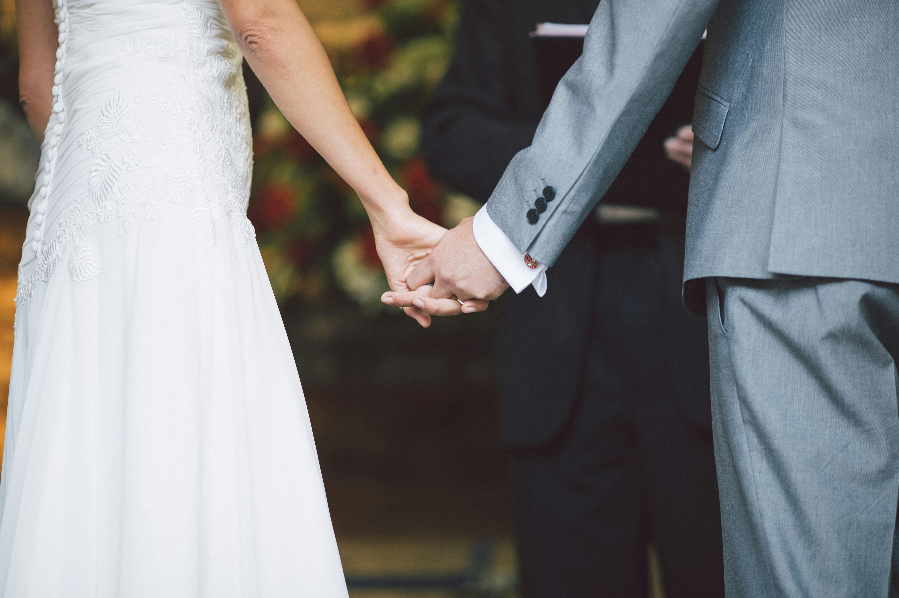

Vuestra boda, vuestra música.

En Vilàtrio ponemos música a cada momento de vuestra celebración, creando una propuesta pensada para vosotros y para vuestro día.
Música en directo para acompañar la ceremonia y hacer de cada momento algo aún más especial.
Una selección musical elegante y cercana para acompañar a vuestros invitados durante el cóctel.
Música en directo para continuar la celebración y crear el ambiente perfecto durante el banquete.
Podéis elegir el momento que queráis acompañar con música en directo o contar con Vilàtrio durante toda vuestra celebración.